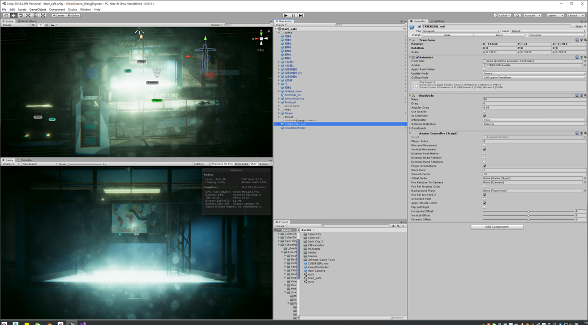

Introduction: People who just lost limbs are troubled by phantom lib pain and most disabled people cannot be dancers as common one. So this is to apply mirror therapy in and complete their dancing dream in VR world.
那些刚刚失去肢体的人们通常被幻肢痛所困扰，并且多数残疾人不能再成为一名舞者。 所以这个项目是常识在VR世界中应用镜像疗法并完成他们的舞蹈梦想。
Time: 2019.07- 2019.09
Type: Conceptual Design
Tool: Unity, Kinect

“And I remember just getting in that car after the appointment and I just start howling. It was like a 45 minutes drive home and I just cried the whole time.”
“我记得在离开医院后刚进那辆车，我就开始嚎叫。开车回家需要 45 分钟，我一直在哭”
“It was like if I was getting suffocated. You know you are angry and you know why did I get injured and then you get jealous because some one`s taking the parts you work so hard to gain.”
“就像要窒息一样。 你知道你很生气，你知道为什么我会受伤，然后你会嫉妒，因为有人拿走了你努力工作获得的部分。”
“High-intensity training caused my knees to be injured. I didn't go to the doctor. I feel that any treatment of injuries takes a long break to recover, and long-term rest is fatal to the dancers.”
“高强度的训练导致我的膝盖受伤。我没有去看医生。 我觉得任何对伤病的治疗都需要长时间的休息才能恢复，长期的休息对舞者来说是致命的。”
When first see somebody dancing gracefully, even the disables are appealed and long to be one of them.
当第一次看到有人优雅地跳舞时，即使是残疾人也会被吸引并渴望成为他们中的一员。
Shooting a video and sharing it on social network can be their first step to present in public. But no one give response because it is less beautiful then normal dancers` performance.
拍摄视频并在社交网络上分享可能是他们公开展示的第一步。 但没有人给出回应，因为它不如普通舞者的表演漂亮。
While there is value in the therapeutic use of the arts, people around reckon that people with disabilities are somehow incapable of creating art worthy of being seen by others.
虽然艺术的治疗用途是有价值的，但周围的人认为残疾人在某种程度上无法创造值得被他人看到的艺术。
Some disables have tried to take course and get professionally trained. But their specialty can bring problems to coach or they are afraid of delaying schedule.
一些残疾人试图参加课程并接受专业培训。但是他们的特长会给教练带来问题，或者他们害怕延误日程。
今天，一种新系统使得直接从图像中检测人体语言成为可能。 我们现在可以想象一个世界，每个摄像头都是实时肢体语言检测器，每个视频都可以被分析。
参考 Baber 提供的古代纺织行为的草图，以及关于如何使用简单落轴的 YouTube 教程，他与数字解剖学家合作开发了 3D 渲染，以完整地保留雕像的现有姿势。 经过几次迭代，结果是一个令人信服的电子模型。
Under this therapy, a patient is allowed to feel the imaginary movement of the removed body part behaving as normal body movement through a mirror. The mirror image of the normal body part helps reorganize and integrate the mismatch between proprioception and visual feedback of the removed body. Thus, enhancing the treatment effect for phantom limb pain.
在这种疗法下，患者可以通过镜子感受到被切除的身体部位的假想运动，就像正常的身体运动一样。正常身体部位的镜像有助于重组和整合移除身体的本体感觉和视觉反馈之间的不匹配。 从而提高幻肢痛的治疗效果。
- 完全沉浸
- 可以灵活调节视角
- Uncomfortable for long time wearing
- Hard to avoid vibrating of view angle that presents on screen.
- 长时间佩戴很不舒服
- 很难避免呈现在屏幕上视角的抖动
- The space need for movement is still too big.
- The appearance of any obstacle will greatly affect the accurate identification
- 需要很大的活动空间
- 任何障碍的出现都会影响到识别的准确性
- The screen is not big enough to present all details
屏幕的大小不足以展示所有的细节
用户通过戴上VR眼镜沉浸在设计好的虚拟世界中，然后开始跳舞。kinect 可以识别用户的动作并将它们同步到计算机。 计算机将虚拟世界中的舞蹈和背景记录在一起，用户可以将其导入视频，便于在互联网上共享。
-The movement of user can be synchronized to the character in virtual world.
-Decoration of the stage and the appearance of this character can be changed in softawer Unity. This time I choose the cyberpunk theme.
-The whole dancing process demonstrated on screen can be recorded and shared as video.
-Hope that in the future, limb calculation technology can be realized so that the movement of the unexisted limb can be calculated out automatically.
-The video angle can be adjusted flexibly.
